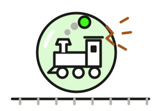

Eisenbahn-Blase 1873: der Krach der Bahnanleihen
In den frühen 1870er-Jahren liehen Anleger in Amerika und Europa den Eisenbahnen über Anleihen mit hohen Kupons riesige Summen – 1873 platzte die Blase. Bis 1875 kam es bei gut einem Drittel des US-Marktes für Unternehmensanleihen zum Zahlungsausfall. Fünf kurze Karten: Boom, Anleihen, Krach, Folgen, Lehren. Lesezeit: etwa 6 Minuten · Stand: 08.10.2026

Der Bau-Boom und sein Ende
Neu gebaute Bahnstrecke in den USA, in Meilen je Jahr (1 Meile = 1,6 km). Von 1865 bis 1872 stieg der Neubau auf das Neunfache. Bis 1875 fiel er auf gut ein Fünftel des Höchststands und blieb bis 1878 niedrig.
Boom 1865–1872Krach 1873danachAbschwung in den USA (Okt. 1873 bis März 1879)
Zahlen als Tabelle
| Jahr | Neu gebaut, Meilen |
|---|---|
| 1865 | 819 |
| 1866 | 1.404 |
| 1867 | 2.541 |
| 1868 | 2.468 |
| 1869 | 4.103 |
| 1870 | 5.658 |
| 1871 | 6.660 |
| 1872 | 7.439 |
| 1873 | 5.217 |
| 1874 | 2.584 |
| 1875 | 1.606 |
| 1876 | 2.575 |
| 1877 | 2.280 |
| 1878 | 2.428 |
| 1879 | 5.006 |
Der Boom: Schienen auf Pump
Nach dem Bürgerkrieg bauten die USA Eisenbahnen wie nie zuvor. Von Ende 1865 bis Ende 1873 verdoppelte sich das Netz auf rund 70.000 Meilen, gut 110.000 km.
Bezahlt wurde zunehmend mit Anleihen: Die Schulden der Bahnen wuchsen viel schneller als ihr Aktienkapital. Auch in Europa lief ein Boom, verstärkt durch fünf Milliarden Francs, die Frankreich nach dem Krieg von 1870/71 an Deutschland zahlen musste.
Geld der US-Bahnen, in Mio. Dollar
Anleihen rund vervierfacht, Aktienkapital gut das Zweieinhalbfache. Der Wert für 1873 enthält auch sonstige Schulden.
Kurz gesagt: Die Bahnen liehen sich Geld für Strecken, die ihre Einnahmen erst noch bringen sollten.
Die Anleihen: hoher Kupon, große Versprechen
Der Musterfall war die Northern Pacific. Im Juli 1870 beschloss die Bahn Anleihen über 100 Mio. Dollar mit 7,3 % Kupon, zahlbar in Gold – also in Goldmünzen statt in Papiergeld. Besichert waren sie mit einer Hypothek auf Bahn und Land, die vor allen anderen Gläubigern zum Zug kommt. Nur: Die Strecke sollte erst noch gebaut werden. Die Bank Jay Cooke & Co. verkaufte die Anleihen vor allem an Kleinsparer, oft in Stücken zu 100 Dollar.
Auch in Deutschland griffen Anleger zu. Bethel Henry Strousberg, der „Eisenbahnkönig“, baute Bahnen in Rumänien und gab dafür Anleihen mit 7,5 % Kupon aus. Zum Zinstermin am 1. Januar 1871 konnte er nicht zahlen.
Kupon und Rendite um 1870, in % pro Jahr
Renditen 1870–1873; USA: höchster Kupon der ab Juli 1870 erlaubten neuen Staatsanleihen (daneben 4,5 und 4 %). US-Bahnanleihen brachten 1869 bis 1873 im Schnitt 7,5 bis 8,4 % Rendite.
Kurz gesagt: Ein hoher Kupon ist der Preis für ein höheres Risiko – kein Geschenk.
Der Krach: 1873 platzt die Blase
Der erste Stoß kam aus Wien: Am 9. Mai 1873 brach die Wiener Börse ein. Danach verkauften Anleger in Europa amerikanische Wertpapiere, vor allem Bahnanleihen. Die Bahnen bekamen kaum noch neues Geld.
Am 18. September 1873 stellte die Bank Jay Cooke & Co. die Zahlungen ein – sie hatte der Northern Pacific immer mehr Geld geliehen. Zwei Tage später schloss die New Yorker Börse, zum ersten Mal in ihrer Geschichte. In den USA heißt dieser Herbst bis heute „Panik von 1873“. Auch in Berlin brach die Börse ein: der Gründerkrach.
Das Jahr 1873
- 9. Mai: Börsenkrach in WienDer „Schwarze Freitag“, acht Tage nach Eröffnung der Weltausstellung. Laut Stadt Wien gehen an diesem Tag 120 Unternehmen in die Insolvenz.
- Danach: Europa verkauftAnleger trennen sich von US-Wertpapieren, vor allem von Bahnanleihen.
- 18. September: Jay Cooke & Co. zahlungsunfähigDie Bank hinter den Anleihen der Northern Pacific stellt die Zahlungen ein. In den USA scheitern danach mindestens 100 Banken.
- 20. September: Börse New York schließtZum ersten Mal in ihrer Geschichte – erst am 30. September öffnet sie wieder.
- Herbst: Gründerkrach in BerlinAuch die Berliner Börse bricht ein.
Kurz gesagt: Der Krach begann weit weg in Wien – und traf dann die Schuldner, die am dringendsten neues Geld brauchten.
Die Folgen: Zinsen bleiben aus
Nach dem Krach blieben bis Anfang 1876 bei 125 weiteren Bahngesellschaften Zinsen aus. Eine Langzeitstudie über die Jahre 1866 bis 2008 zeigt: 1873 bis 1875 waren für Unternehmensanleihen in den USA die schlimmsten drei Jahre – schlimmer als die Große Depression der 1930er.
Bei der Northern Pacific sieht man, warum. Im Geschäftsjahr bis Juni 1874 nahm sie knapp 1 Mio. Dollar ein – die Zinsen auf ihre Anleihen hätten mehr als doppelt so viel gekostet. Ab Dezember 1873 zahlte sie die Zinsen nur noch mit neuen Schuldscheinen statt mit Geld, 1875 setzte ein Gericht einen Zwangsverwalter ein. Auch Staaten zahlten nicht mehr – etwa Honduras, das ab 1873 nichts mehr auf seine Londoner Bahnanleihen zahlte.
Anteil der US-Unternehmensanleihen mit Zahlungsausfall
Gemessen am Nennwert aller US-Unternehmensanleihen – damals fast nur Bahnen. Zahlungsausfall heißt hier: Zinsen ausgefallen, Zwangsverwaltung oder Umschuldung, nicht unbedingt Totalverlust.
Kurz gesagt: Ein Ausfall hieß nicht immer Totalverlust – aber oft jahrelanges Warten und Aktien statt Geld.
Die Lehren: was das für deine Anleihe heißt
Die Blase ist über 150 Jahre alt. Ihre Muster findest du bis heute: neue Schuldner mit großen Plänen, hohe Kupons und viele Anleger, die gleichzeitig zugreifen.
Wie gut ein Schuldner zahlen kann, zeigt seine Bonität. Was bei einem Ausfall passiert, erklärt die Seite Wenn der Schuldner nicht zahlt.
Vier Fragen vor dem Kauf
- Warum ist der Kupon so hoch?7,3 % in Gold klangen gut, als neue US-Staatsanleihen höchstens 5 % Kupon trugen. Der Abstand war der Lohn für das Risiko. Den heutigen Abstand zu Staatsanleihen zeigen die Risikoaufschläge.
- Woher kommen die Zinsen?„Zinsen werden nicht lange gezahlt, wenn sie nicht verdient werden“, schrieb eine New Yorker Fachzeitung 1875. Es zählen laufende Einnahmen, nicht Pläne.
- Was steckt hinter der Sicherheit?Eine erstrangige Hypothek auf eine Bahn, die kaum etwas einnimmt, deckt wenig. Die Gläubiger der Northern Pacific bekamen am Ende statt Geld Vorzugsaktien – mit Dividende nur, wenn die Bahn Gewinn machte.
- Leihen sich gerade alle gleichzeitig Geld?In der Kursliste einer New Yorker Fachzeitung stieg die Zahl der Schuldner mit Anleihen von 1866 bis 1872 auf mehr als das Zweieinhalbfache. Wer auf mehrere Schuldner und Branchen streut, den trifft ein solcher Einbruch weniger hart.
Kurz gesagt: Nur die erstklassigen Bahnanleihen blieben gefragt – manche standen 1875 so hoch wie nie. Entscheidend ist der Schuldner, nicht der Kupon.
Allgemeine Information zur Geschichte der Anleihen – keine Anlageberatung. Vergangene Krisen sagen nichts Genaues über künftige voraus.
Datenquellen und Methodik
Stand. Zusammengestellt am 08.10.2026 aus Primärquellen und Fachliteratur. Beträge in Dollar von damals, nicht in heutige Kaufkraft umgerechnet. 1 Meile = 1,609 km.
Schaubild und Boom (Karte 1). U.S. Bureau of the Census, Historical Statistics of the United States, Colonial Times to 1970 (1975), Kapitel Q: Reihe Q 329 „Miles of Railroad Built“ (neu gebaute Strecke; nur Strecken, die 1880 noch in Betrieb waren, der tatsächliche Neubau war eher etwas höher), Reihe Q 321 (Streckennetz am 31.12.: 35.085 Meilen 1865, 70.268 Meilen 1873), Reihen Q 347–349 (Aktienkapital und Anleiheschulden; 1873 einschließlich sonstiger Schulden). Abgeglichen mit der NBER Macrohistory Database (FRED, A02F2AUSA374NNBR). Kriegsentschädigung: Deutsches Historisches Museum, LeMO, Jahreschronik 1871 (Betrag) und „Gründerkrach und Gründerkrise“ (Wirkung auf die Konjunktur).
Anleihen (Karte 2). Northern Pacific: Stuart Daggett, Railroad Reorganization (1908), Kap. VIII; Ellis Paxson Oberholtzer, Jay Cooke, Financier of the Civil War, Bd. 2 (1907), S. 158 f. und 234. US-Staatsanleihen: Funding Act vom 14.07.1870 (16 Stat. 272) mit Kupons von 5, 4,5 und 4 %. Renditen britischer und deutscher Staatsanleihen 1870–1873: Jordà-Schularick-Taylor Macrohistory Database (Variable ltrate). US-Bahnanleihen: Railroad Bond Yields nach F. R. Macaulay, NBER (FRED, M1319AUSM156NNBR), Monatswerte 1869–1873 zwischen 7,46 und 8,35 %. Strousberg (Kupon 7½ %, Ausfall zum 01.01.1871): Röll, Bd. 8 (1917), „Rumänische Eisenbahnen“, S. 247 f.; Ralf Roth, The Rise and Fall of the Railway King (2004), S. 10.
Krach (Karte 3). Wien: Wien Geschichte Wiki (Stadt Wien), „Börsenkrach“ – dort auch die Zahl von 120 Insolvenzen am 9. Mai; Oesterreichische Nationalbank, Unternehmensgeschichte 1818–1878. USA: Gary Richardson und Tim Sablik, Banking Panics of the Gilded Age, Federal Reserve History (2015) – Verkäufe aus Europa, Jay Cooke, mindestens 100 Bankpleiten; Thomas Klitgaard und James Narron, Crisis Chronicles: The Long Depression and the Panic of 1873, Federal Reserve Bank of New York (2016); Oberholtzer, S. 430 und 435 (Börse geschlossen ab 20.09., Wiedereröffnung am 30.09.1873). Berlin: Deutsches Historisches Museum, LeMO, „Gründerkrach und Gründerkrise“.
Folgen (Karte 4). Ausfälle von Bahngesellschaften: The Bankers' Magazine, Mai 1876, S. 843–846 (Tabelle nach dem Commercial and Financial Chronicle, Stand Januar 1876: 197 Gesellschaften mit 789 Mio. Dollar Anleihen, davon 125 erst nach der Panik vom September 1873). Anteile je Jahr: Kay Giesecke, Francis A. Longstaff, Stephen Schaefer und Ilya Strebulaev, Corporate Bond Default Risk: A 150-Year Perspective, NBER Working Paper 15848 (2010) bzw. Journal of Financial Economics 102 (2011), Tab. 3 – Anteil am Nennwert aller US-Unternehmensanleihen, der im Jahr ausfiel. Northern Pacific: Daggett, Kap. VIII (Einnahmen 988.131 Dollar im Geschäftsjahr bis Juni 1874, Zinsen in Schuldscheinen ab Dezember 1873, Zwangsverwaltung ab 16.04.1875); die Zinslast ist eigene Rechnung (ausgegebene Anleihen 30,78 Mio. Dollar × 7,3 % = rund 2,25 Mio. Dollar). Honduras: Papers Relating to the Foreign Relations of the United States 1912, Dok. 735 (Anleihen von 1867–1870, seit 1873 im Ausfall). Abschwung: NBER, US Business Cycle Expansions and Contractions (Oktober 1873 bis März 1879, 65 Monate).
Lehren (Karte 5). Zitat sinngemäß übersetzt aus The Commercial and Financial Chronicle, Investors' Supplement vom 25.12.1875 („interest will not be paid long if it is not earned“). Umtausch der Anleihen der Northern Pacific in Vorzugsaktien: Daggett, Kap. VIII. Zahl der Schuldner mit Anleihen in der Kursliste des Commercial and Financial Chronicle (158 im Jahr 1866, 421 im Jahr 1872): Giesecke u. a., S. 8. Kurse der erstklassigen Bahnanleihen: The Commercial and Financial Chronicle, Investors' Supplement vom 26.06.1875.